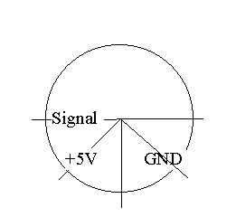

There are a lot of multimeters with a serial interface, both cheep and expensive. See the description of each individual device.
A multimeter with a serial interface can collect data from all devices with an analog output. Measure the voltage from the analog output with the multimeter and connect the multimeter via the serial interface to the PC.
In »Setup measurement parameters | Probes and axes« in Datalyse you can choose an Y-axis factor and Y-axis offset. You can also choose a Vernier - probe. In this case is Y-axis factor and Y-axis offset read from the file vernier.ini (see below). The user can edit the file.
Example:
The Pressure meter PTM100 gives the analog output 1mV pr mBar, and offset is 0 mBar. Write the following line in vernier.ini:
PTM100 Pressure meter"P/Bar"1000.0"0.0
The setup is:
Title"physical quantity/unit"factor"offset
You can add probes in the file »vernier.ini«.
The pin connections of the Vernier-probes seen from the front (the wire goes through the back of the screen to the sensor):

Pin position counterclockwise: